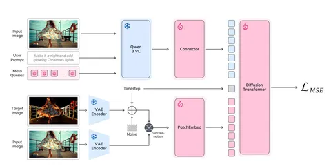

Сегодня приступим к разбору статьи об эдитинг-модели от коллег из Сбера. Вторая часть уже опубликована в канале @c_research, который ведёт Сергей Кастрюлин из Yandex Research.
Ключевая цель авторов — сделать небольшую и эффективную модель, которая будет быстро инфериться, дёшево учиться и решать задачу instruction-based image editing. То есть выполнять только указанное в инструкции действие (например, добавить шарф), не делая ничего лишнего (не меняя цвет лица, фон и так далее).
Модель выложена в опенсорс. Она быстрая и при этом действительно компактная, поскольку основана на эффективных базовых блоках — Qwen3-VL-2B-Instruct в качестве текстово-картиночного энкодера и Sana-1.5-1.6B в качестве диффузионного генератора.
Что касается качества генерации, мы провели внутренние замеры, по которым VIBE показала качество примерно на уровне опенсорсной Bagel.
Архитектура
Самое интересное в статье — это внутреннее устройство и обучение системы. Архитектура состоит из двух блоков:
- небольшой энкодер — Qwen3-VL на 2 миллиарда параметров;
- базовая диффузионка — Sana 1.5 на 1,6 миллиарда параметров.
Напомним, что Sana 1.5 — это работа Nvidia начала прошлого года, где авторы пытаются максимально дёшево обучить быструю диффузионку разумного качества. Нам она запомнилась стратегией переиспользования ранее обученной Sana 1 и тем, как реализован inference-time compute scaling. Авторы генерируют очень много изображений (до 2000 за время обычной генерации), после чего VLM выбирает лучшие — таким образом они «хакают» бенчмарки.
Как всё работает
1) VLM обрабатывает входное изображение и промпт. Это стандартная практика, но авторы отдельно подчёркивают, что считают важным выучивание связи между картинкой и промптом именно внутри VLM.
2) Отдельно для подачи в VLM обучаются MetaQueries — полезные добавки-суффиксы к исходному промпту, обогащающие входное представление без модификации весов VLM.
3) Для задачи редактирования в диффузионку важно как-то подать текстовый кондишен. В работе рассматриваются два способа.
Первый — трансформерный: изображение разбивается на патчи, получаются картиночные эмбеддинги, которые конкатенируются с текстовыми и подаются одной последовательностью.
Второй — более классический: поканальная конкатенация. Кондишен-картинка конкатенируется с шумом, из которого генерируется изображение. После этого всё подаётся в свёрточный слой увеличенной размерности.
С одной стороны, авторы пишут, что вариант с единой последовательностью работает лучше. Такой вывод не вызывает удивление, поскольку возможность одинаково обрабатывать картинки и тексты на входе — очень полезная фишка трансформерных моделей. Но в финальной системе авторы используют именно конкатенацию, потому что она не увеличивает длину последовательности и экономит время инференса.
То есть, имея диффузионный трансформер, авторы всё равно делают поканальную конкатенацию со свёрткой, а затем работают с патч-эмбеддингами свёрточных представлений. Это решение — довольно нестандартное.
Во второй части разобрали, как устроено обучение модели, зачем используются Meta Queries и какие данные применяются для тренировки.
Разбор подготовил
CV Time
